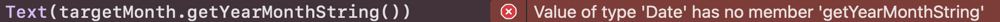

links
アプリ概要
今回は特に機能のないカレンダーを作成しました。
なぜ、カレンダーの作成を行ったのかというと、前回のToDoリストも
その一つなのですが、最終的に作成したいアプリの機能の1つとしてカレンダーが
あるからです。その練習を兼ねて、カレンダー作成に取り組みました。
下の画像が、アプリ起動直後の画面となります。
このように何の変哲もないただのカレンダーです。
この画像では、初期表示が9月となっていますが、表示はそのときの月に合わせて
変化します。現在(9/5)は9月なので、9月が一番最初に表示されます。
また、月表示の左右にある「<」「>」ボタンを押下することで、下の画像の様に 任意の月へ移動することができます。
コード(全体)
以下がコードの全体像になります。
/ContentView
import SwiftUI
import SelectableCalendarView
import Foundation
import UIKit
struct CalendarView: View {
let monthToDisplay:Date
init(monthToDisplay: Date){
self.monthToDisplay = monthToDisplay
}
var body: some View {
LazyVGrid(columns: Array(repeating: GridItem(), count: 7)) {
ForEach(["日", "月", "火", "水", "木", "金", "土"], id: \.self) { weekdayName in
Text(weekdayName)
}
Section {
ForEach(monthToDisplay.getDaysForMonth(), id: \.self) { date in
if Calendar.current.isDate(date, equalTo: monthToDisplay, toGranularity:.month){
Button(action: {
print(date.getDayNumber())
}){
Text("\(date.getDayNumber())")
.padding(8)
.foregroundColor(.white)
.frame(width: 50, height: 50)
.background(Color.gray)
.id(date)
}
}else{
Text("\(date.getDayNumber())")
.padding(8)
.foregroundColor(.black)
.frame(width: 50, height: 50)
.background(Color.gray)
}
}
}
}
}
}
struct ContentView: View {
@State var num:Int = 0
var body: some View {
VStack {
Text("Simple Calendar")
.font(.title)
.padding()
if let targetMonth = Calendar.current.date(byAdding: .month, value: num, to: Date()) {
HStack{
Button(action: {
num -= 1
}){
Image(systemName: "lessthan")
}
Text(targetMonth.formatYearMonth())
Button(action: {
num += 1
}){
Image(systemName: "greaterthan")
}
}
CalendarView(monthToDisplay: targetMonth)
}
}
}
}
struct ContentView_Previews: PreviewProvider {
static var previews: some View {
ContentView()
}
}
// extension some func for Date and Calendar
extension Date {
func getDayNumber()->Int {
return Calendar.current.component(.day, from: self) ?? 0
}
func getDaysForMonth() -> [Date] {
guard
let monthInterval = Calendar.current.dateInterval(of: .month, for: self),
let monthFirstWeek = Calendar.current.dateInterval(of: .weekOfMonth, for: monthInterval.start),
let monthLastWeek = Calendar.current.dateInterval(of: .weekOfMonth, for: monthInterval.end)
else {
return []
}
let resultDates = Calendar.current.generateDates(inside: DateInterval(start: monthFirstWeek.start, end: monthLastWeek.end),
matching: DateComponents(hour: 0, minute: 0, second: 0))
return resultDates
}
func formatYearMonth() -> String{
let rowDate = self.formatted().split(separator: "/")
var s = ""
var cnt = 0
for i in rowDate[2]{
if cnt > 3{
break
}
s += String(i)
cnt += 1
}
if rowDate[0].count < 2{
s += " \(rowDate[0])月"
}else{
s += " \(rowDate[0])月"
}
return s
}
}
extension Calendar {
func generateDates(inside interval: DateInterval, matching components: DateComponents) -> [Date] {
var dates = [interval.start]
enumerateDates(startingAfter: interval.start,
matching: components,
matchingPolicy: .nextTime
) { date, _, stop in
if let date = date {
if date < interval.end {
dates.append(date)
} else {
stop = true
}
}
}
return dates
}
}
コード解説
今回のカレンダー作成では、この記事を参考にほとんど作成しました。
しかし、この記事では補えなかった部分は、自分なりに考え補填しました。
大体の説明はこの記事の中でされているため、あえてここでは触れず、今回は自分で追加した部分の解説を
行いたいと思います。
月の変更
今回参考にした記事では、現在の月の表示はできたものの、月の選択は行えませんでした。
やはり、より使いやすくするためには、月の選択は行いたいものです。そこで、以下のプログラムを追加しました。
月の選択の鍵となるのは、47行目で宣言している@State var num:Intです。
(※宣言箇所と使用箇所が離れているため、使用箇所のみ掲載しています。)
この変数numはCalendar.current.date()内のvalue引数の値として使用しています。
value引数には、現在の月から表示したい月の差を渡します。
例えば、現在の月が6月なのに対し、表示したい月が8月の場合は「value:2」とすることで
表示できます。逆に過去の月である、3月を表示したい場合は「value:-3」とします。
また、変数numはState属性であるため、numの値が変更されるたびに、再表示が行われます。
エラーの解決
今回はgithubからパッケージを導入することで、カレンダーの表示を行いました。 しかし、どうしてもエラーを解決できない部分がありました。以下がエラーの内容になります。

このエラー内容はgetYearMonthStringというものは定義されていないと言ったものです。
最初は見ながらコードを書き写していたので、写し間違えの可能性があると思い、記事から直接コピペしても
治りませんでした。いくら探しても見つからなかったため、以下のプログラムを追記することで解決しました。
この関数で行いたかったことは、表示しているカレンダーの年と月の表示でした。
そのため、引数によって渡されたDate型の値から年と月だけを取り出して、呼び出しもとに
返すといった処理を行いました。
ここで1つ望ましくないと思ったのが、"月"とハードコーディングしてしまっていることです。
本来は、言語設定によって表示の仕方を変更するべきですが、今回は言語設定ではなく、とりあえずカレンダーを
作成することに、フォーカスしていたので、このようなコーディングとなっています。
その他
そのほかにも、日付の枠の大きさの統一や、色の変化、ボタン機能の追加などを行いましたが、 プロパティを少し追加、変更する程度の改良なのでスクショでの解説は省きます。
まとめ
最後にまとめです。
今回は後の開発で参考にしようと思い、カレンダーの作成を行いました。記事を参考に自分なりに改変したり、
著者のプログラムを解析したりすることは、自身のレベルアップにとても役立つ経験だと感じました。
また、著者のプログラムの意図を汲み取るためにリファレンスなどを読む機会も今までより多かったので、
リファレンスを読む練習にもなりました。
一方で、今回記事を参考に作成をするにあたって、最初の時点で大量発生した「存在しません」のエラーに悩まされました。
原因は、githubからのパッケージの導入が行われていなかったことによるエラーだったのですが、
パッケージの導入が必要であることを記事からうまく汲み取れず、つまずいてしまいました。また、
初めてパッケージを導入しての開発だったので、パッケージに関して学ぶことも多かったです。
《参考文献》
SwiftUIでカレンダービューを作り（LazyVGridを使って100行未満のコードで）
https://qiita.com/MaShunzhe/items/79171de0f339a03cf9dc